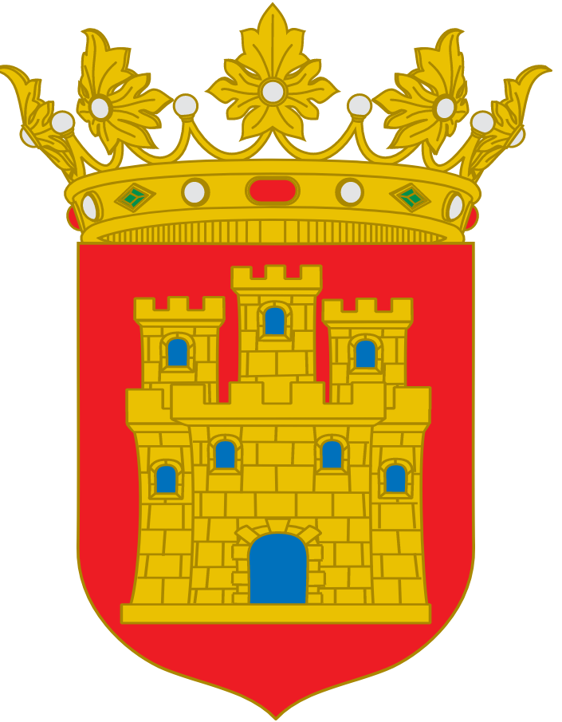

Se originó en la época del Reino de Asturias. El primer conde de Castilla se llamaba Rodrigo de Castilla (Reino entre los años 850 y 873 D.C). El nombre se debe a la grande multitud de castillos que habían.
Castilla era Condado Vasallo del Reino de León en el siglo IX. Castilla mayormente estaba habitado de Cántabros y Vascos
En el año 929 el condado de Castilla se independizó de León con el conde Fernan Gonzalez. Fernán Gonzalez venía de una familia muy influyente llamada la familia de los Lara. La unión definitiva con León pasó en 1230 con Fernando III

Escudo del Reino de Castilla

Territorios de la corona
De Wikipedia (gif solo en disponible inglés)